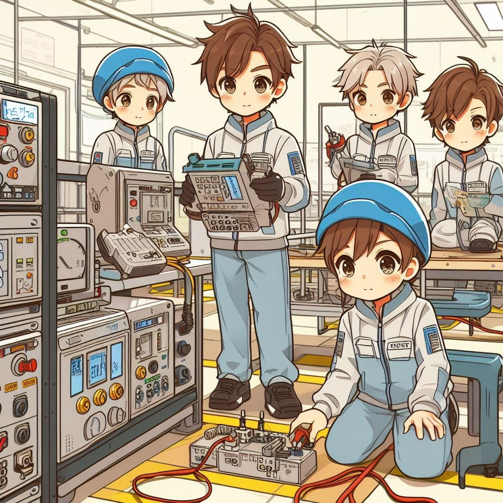
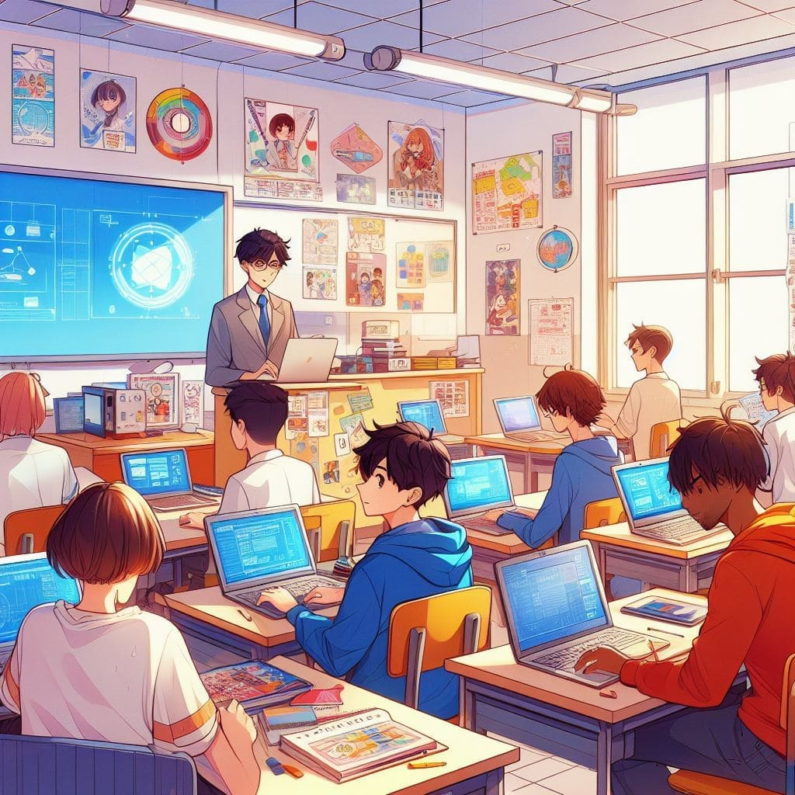
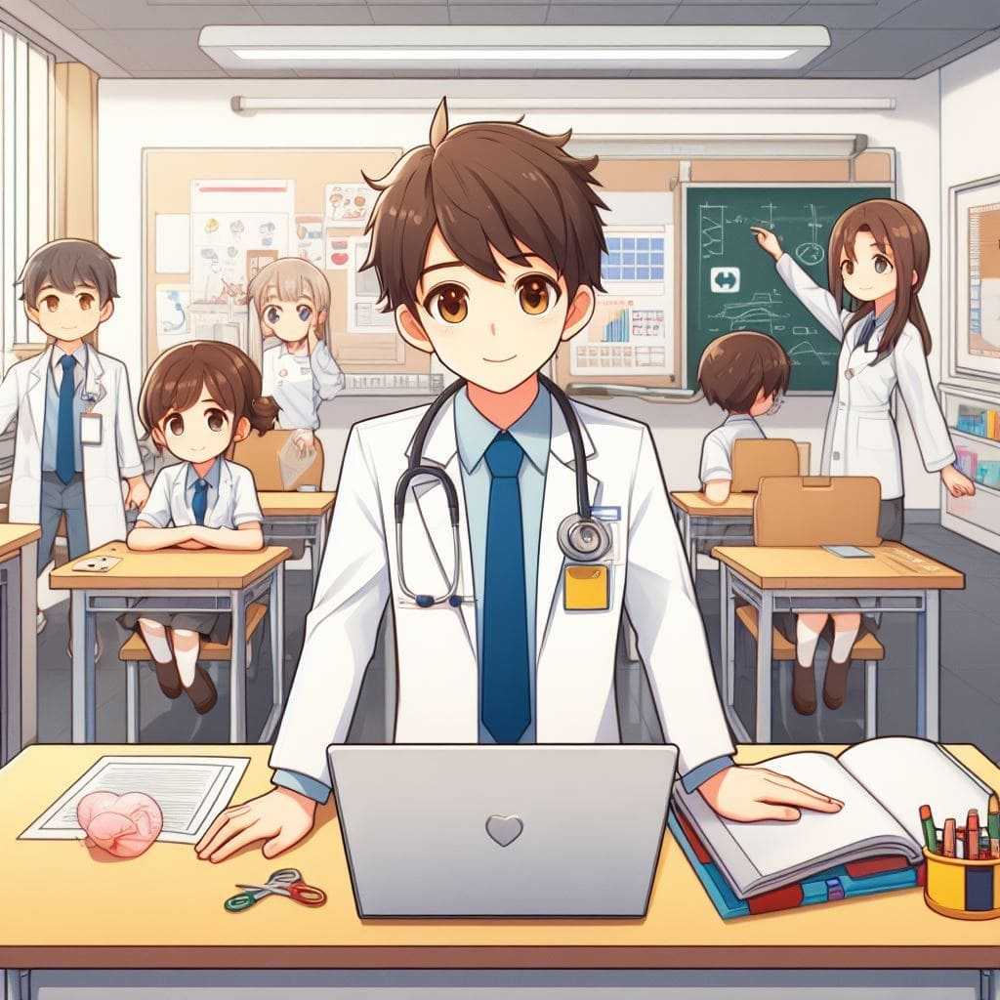

¿Qué beneficios tiene estudiar en el Complejo Educativo Thomas Jefferson?
¿Te gustaría estudiar en una institución que te ofrece una formación de calidad, una atención personalizada y una amplia
gama de carreras para escoger? Si tu respuesta es sí, entonces el Complejo Educativo Thomas Jefferson es tu mejor opción.
En el Complejo Educativo Thomas Jefferson, podrás elegir entre diferentes carreras que se adaptan a tus intereses y objetivos
profesionales. Podrás aprender de los mejores profesores, que cuentan con una amplia experiencia y reconocimiento en sus campos.
Además, tendrás acceso a instalaciones adecuadas, y recursos tecnológicos que te facilitarán el aprendizaje.
Y lo mejor de todo, podrás formar parte de una comunidad estudiantil diversa, dinámica y solidaria, que te apoyará en tu desarrollo
personal y académico. A continuación, te explicamos en qué consisten las diferentes carreras que ofrece el Complejo Educativo Thomas
Jefferson, para que puedas elegir la que más te convenga.
¡No lo dudes más y matricúlate ya en el Complejo Educativo Thomas Jefferson,
el complejo educativo que te prepara para el futuro!
Descripción de la Carrera:
Una carrera general de educación media proporciona a los estudiantes una base amplia y equilibrada
de conocimientos y habilidades en una variedad de materias. A diferencia de carreras más especializadas,
este tipo de programa se centra en brindar una educación integral que prepara a los estudiantes para una
amplia gama de oportunidades académicas y profesionales en el futuro.
Materias y Contenido de Estudio:
Los estudiantes que siguen una carrera general en educación media suelen tomar una serie de materias
obligatorias y optativas que abarcan diversas áreas, que pueden incluir:
-
Matemáticas: Se enseñan conceptos matemáticos fundamentales, desde álgebra hasta cálculo, dependiendo del nivel de estudio.
-
Ciencias: Los estudiantes pueden estudiar biología, química, física o ciencias de la Tierra para comprender los principios científicos básicos.
-
Lengua y Literatura: Se enfatiza la lectura, la escritura, la gramática y la comprensión oral para desarrollar habilidades de comunicación efectiva.
-
Historia y Ciencias Sociales: Se exploran eventos históricos, geografía, gobierno y cultura para comprender la sociedad y el mundo en general.
- Artes y Música: Los estudiantes pueden tomar clases de arte, música o teatro para fomentar la creatividad y la apreciación artística.
- Idiomas Extranjeros: Los estudiantes pueden optar por estudiar un segundo idioma para fomentar la competencia en la comunicación internacional.
- Tecnología y Computación: Se introducen conceptos relacionados con la tecnología de la información y la informática.
Perspectivas Laborales:
Las perspectivas laborales para graduados de una carrera general de educación media dependen en gran medida
de las elecciones individuales que hagan después de completarla. Esta carrera proporciona una base sólida para
explorar una variedad de caminos profesionales y académicos, y permite a los estudiantes adaptarse a diferentes
oportunidades a medida que avanzan en sus vidas.
Una carrera general en educación media proporciona una base sólida para una amplia variedad de
oportunidades académicas y profesionales. Los graduados pueden seguir diversas trayectorias, que incluyen:
-
Educación Superior: Pueden continuar sus estudios en una universidad o institución de educación superior en una disciplina específica que les interese.
-
Empleo: Pueden obtener empleo en una amplia gama de industrias y sectores que no requieran una especialización técnica específica.
-
Formación Profesional: Pueden optar por programas de formación profesional o técnica para adquirir habilidades especializadas en un campo particular.
-
Emprendimiento: También pueden iniciar sus propios negocios o proyectos, aprovechando las habilidades y conocimientos adquiridos en la educación secundaria.
Esta carrera se centra en la instalación, mantenimiento y reparación de sistemas eléctricos en una amplia variedad de entornos,
desde hogares y edificios comerciales hasta instalaciones industriales.
Descripción de la Carrera:
Un programa de educación media en electricidad o eléctrica prepara a los estudiantes para trabajo técnico en una amplia
gama de situaciones relacionadas con la electricidad. Los estudiantes adquieren conocimientos teóricos y habilidades prácticas
para trabajar con sistemas eléctricos y electrónicos.
Materias y Contenido de Estudio:
Los estudiantes que siguen una carrera en electricidad o eléctrica, en educación media suelen tomar una serie de materias
obligatorias y optativas que abarcan diversas áreas, que pueden incluir:
-
Fundamentos de Electricidad: Los estudiantes aprenden los principios básicos de la electricidad, incluyendo circuitos eléctricos, voltaje, corriente, resistencia y leyes de Ohm.
-
Instalación Eléctrica: Se enseñarán las técnicas de instalación de cableado eléctrico, interruptores, enchufes y paneles de distribución.
-
Seguridad Eléctrica: Los estudiantes aprenden sobre los procedimientos de seguridad al trabajar con electricidad para prevenir accidentes y descargas eléctricas.
-
Electrónica Básica: Se introducen conceptos básicos de electrónica, incluyendo componentes electrónicos como resistencias, capacitores, transistores y diodos.
- Mantenimiento y Reparación: Los estudiantes adquieren habilidades para diagnosticar y reparar sistemas eléctricos y electrónicos defectuosos.
- Normativas y Códigos Eléctricos: Se estudian las regulaciones y normativas aplicables a la instalación eléctrica, lo que es fundamental para asegurar la conformidad con las normas de seguridad.
- Prácticas en el Campo: Los estudiantes suelen completar prácticas en el mundo real, donde aplican sus conocimientos y habilidades en proyectos reales bajo la supervisión de profesionales experimentados.

Perspectivas Laborales:
Las perspectivas laborales para técnicos eléctricos suelen ser buenas, ya que siempre existe una demanda constante de servicios
de electricidad en una variedad de industrias. Además, aquellos con capacitación y experiencia adicional pueden avanzar en sus
carreras y convertirse en supervisores o especialistas en sistemas eléctricos más avanzados.
Después de completar una carrera de electricista en bachillerato, los graduados pueden buscar empleo en una variedad de roles, incluyendo:
-
Electricista Residencial: Trabajan en la instalación y mantenimiento de sistemas eléctricos en hogares.
-
Electricista Comercial: Se encargan de sistemas eléctricos en edificios comerciales y oficinas.
-
Electricista Industrial: Trabajan en plantas industriales y fábricas para mantener y reparar sistemas eléctricos más complejos.
-
Técnico en Electrónica: Pueden especializarse en la reparación y mantenimiento de equipos electrónicos, como electrodomésticos, sistemas de audio y video, etc.
Descripción de la Carrera:
La carrera de Informatica, tambien llamada Infraestructura Tecnológica y Servicios Informáticos se enfoca en preparar a los estudiantes para gestionar y
mantener la infraestructura tecnológica de las organizaciones, lo que incluye redes de computadoras, servidores, sistemas de
almacenamiento de datos y servicios informáticos.
Materias y Contenido de Estudio:
Los estudiantes que siguen una carrera en informática, en educación media suelen tomar una serie de materias
obligatorias y optativas que abarcan diversas áreas, que pueden incluir:

-
Fundamentos de Tecnología de la Información: Los estudiantes adquieren conocimientos sobre los conceptos básicos de la informática y la tecnología de la información, incluyendo hardware, software y redes.
-
Redes de Computadoras: Se enseñan los principios de diseño, configuración y mantenimiento de redes, así como la seguridad de redes.
-
Administración de Servidores: Los estudiantes aprenden a configurar y gestionar servidores que ofrecen servicios críticos para las organizaciones, como correo electrónico, almacenamiento y aplicaciones web.
-
Seguridad Informática: Se abordan temas relacionados con la seguridad cibernética, incluyendo la protección de datos, prevención de intrusiones y gestión de riesgos.
- Virtualización y Cloud Computing: Se exploran conceptos relacionados con la virtualización de servidores y el uso de servicios en la nube para optimizar la infraestructura tecnológica.
- Gestión de Proyectos Tecnológicos: Los estudiantes aprenden a planificar y ejecutar proyectos de infraestructura tecnológica, desde la adquisición de equipos hasta la implementación y el mantenimiento.
- Soporte Técnico: Se desarrolla habilidades de resolución de problemas y atención al cliente para proporcionar soporte técnico a los usuarios finales.
Perspectivas Laborales:
Las perspectivas laborales para los profesionales en Infraestructura Tecnológica y Servicios Informáticos suelen ser sólidas, ya que la
tecnología de la información es fundamental en la mayoría de las organizaciones modernas. Además, el constante avance tecnológico crea
oportunidades continuas para quienes deseen mantenerse actualizados y especializarse en áreas específicas.
Después de completar una carrera de Infraestructura Tecnológica y Servicios Informáticos en bachillerato, los graduados pueden buscar
empleo en una variedad de roles, incluyendo:
-
Administrador de Redes: Se encarga de diseñar, configurar y mantener redes de computadoras.
-
Administrador de Servidores: Gestiona servidores y servicios críticos para la organización.
-
Especialista en Seguridad Informática: Trabajan en la protección de datos y sistemas contra amenazas cibernéticas.
-
Técnico de Soporte Técnico: Brindan asistencia a los usuarios con problemas informáticos y tecnológicos.
-
Gestor de Proyectos Tecnológicos: Dirigen proyectos relacionados con la infraestructura tecnológica de la organización.
Descripción de la Carrera:
Una carrera de Contaduría en la educación media prepara a los estudiantes para ingresar al campo de la contabilidad y las
finanzas, donde adquirirán conocimientos y habilidades esenciales para llevar registros financieros, realizar auditorías, y
brindar asesoramiento financiero a empresas y organizaciones.
Materias y Contenido de Estudio:
Los estudiantes que siguen una carrera en contaduría, en educación media suelen tomar una serie de materias
obligatorias y optativas que abarcan diversas áreas, que pueden incluir:
-
Contabilidad Básica: Los estudiantes aprenden los principios fundamentales de la contabilidad, incluyendo la elaboración de estados financieros, registros de transacciones y análisis financieros.
-
Impuestos: Se introducen conceptos relacionados con la legislación fiscal y cómo calcular y presentar declaraciones de impuestos.
-
Finanzas Empresariales: Se exploran temas relacionados con la gestión financiera de empresas, incluyendo presupuestos, inversiones y financiamiento.
-
Auditoría: Los estudiantes estudian los procedimientos de auditoría, la revisión de estados financieros y la detección de irregularidades.
- Ética Profesional en Contabilidad: Se enfatiza la importancia de la ética en la profesión contable y la responsabilidad hacia los clientes y la sociedad.
- Sistemas de Información Contable: Se enseñan habilidades para utilizar software de contabilidad y sistemas de información financiera.
- Derecho Comercial y Laboral: Se abordan aspectos legales relacionados con las operaciones comerciales y el empleo.
Perspectivas Laborales:
Las perspectivas laborales en el campo de la Contaduría suelen ser sólidas, ya que las empresas y organizaciones requieren
profesionales contables para mantener registros financieros precisos, cumplir con las regulaciones fiscales y tomar decisiones
financieras informadas. Además, el enfoque en la transparencia financiera y el cumplimiento normativo aumenta la demanda de
contadores calificados.
Después de completar una carrera de Contaduría en bachillerato, los graduados pueden buscar empleo en una variedad de roles
en el campo de la contabilidad y las finanzas, incluyendo:
-
Contador Público: Llevan registros financieros, preparan declaraciones de impuestos y brindan servicios de auditoría para empresas y particulares.
-
Analista Financiero: Evalúan inversiones, analizan estados financieros y asesoran a empresas en cuestiones financieras.
-
Especialista en Impuestos: Se especializan en cuestiones fiscales y ayudan a empresas y personas a cumplir con sus obligaciones tributarias.
-
Controller Financiero: Gestionan los sistemas contables y financieros de una organización, supervisando la elaboración de informes financieros y la gestión presupuestaria.
-
Consultor Financiero: Brindan asesoramiento financiero a empresas y particulares sobre estrategias de inversión, planificación financiera y gestión de riesgos.
Descripción de la Carrera:
Una carrera de salud en la educación media prepara a los estudiantes para ingresar al campo de la atención médica y desarrollar
habilidades esenciales para cuidar a los pacientes y promover la salud en diversas áreas.
Materias y Contenido de Estudio:
Los estudiantes que siguen una carrera en salud, en educación media suelen tomar una serie de materias
obligatorias y optativas que abarcan diversas áreas, que pueden incluir:

-
Anatomía y Fisiología: Los estudiantes estudian la estructura y función del cuerpo humano, incluyendo sistemas como el cardiovascular, respiratorio y nervioso.
-
Farmacología Básica: Se introducen conceptos sobre medicamentos y su uso, incluyendo dosificación y efectos secundarios.
-
Ética y Comunicación en la Salud: Se enfatiza la importancia de la ética en la atención médica y se enseñan habilidades de comunicación efectiva con pacientes y colegas.
-
Cuidado de Enfermería Básico: Los estudiantes aprenden a proporcionar cuidados básicos, como tomar signos vitales, administrar medicamentos y realizar vendajes.
- Primeros Auxilios: Se enseñan técnicas de primeros auxilios para responder a situaciones de emergencia, como heridas, quemaduras y paro cardíaco.
- Salud Pública: Se explora la salud a nivel comunitario y se abordan temas como la prevención de enfermedades y promoción de la salud.
- Prácticas Clínicas: Los estudiantes suelen realizar prácticas en hospitales, clínicas o consultorios médicos para aplicar sus conocimientos en entornos reales de atención médica.
Perspectivas Laborales:
Las perspectivas laborales en el campo de la salud suelen ser sólidas, ya que la atención médica es una industria en
crecimiento constante. Además, el enfoque en la prevención de enfermedades y la promoción de la salud está aumentando la
demanda de profesionales de la salud en todas las áreas.
Después de completar una carrera de salud en bachillerato, los graduados pueden buscar empleo en una variedad de roles en
el campo de la atención médica, incluyendo:
-
Auxiliar de Enfermería: Ayudan a enfermeros y médicos en el cuidado de pacientes en hospitales, hogares de ancianos y otras instalaciones de atención médica.
-
Técnico en Emergencias Médicas: Brindan atención de emergencia en situaciones como accidentes automovilísticos o situaciones de trauma.
-
Asistente Médico: Trabajan en consultorios médicos y hospitales para ayudar en la evaluación de pacientes y la administración de tratamientos.
-
Técnico de Laboratorio Médico: Realizan pruebas de laboratorio para ayudar en el diagnóstico de enfermedades.
-
Promotor de Salud Comunitaria: Trabajan en comunidades para educar a las personas sobre prácticas saludables y promover la prevención de enfermedades.